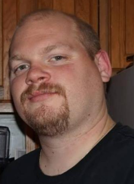

<!DOCTYPE html>
<html lang="en"></html>
    <head>
        <meta charset="UTP-8">
        <title>index</title>
        <link rel="stylesheet" href="style.css">
    </head>

    <body>
        <!-- My name displayed at upper left hand corner -->
        <header class="header"><h1>Jeffrey S Easley</h1></header>

        <!-- About, Portfolio, and Contact buttons to the upper right side of the page.  They need to link to the respective pages. -->
        <button type="button" class="button">About</button>
        <button type="button" class="button">Portfolio</button>
        <button type="button" class="button">Contact</button>

        <!-- Header for the about me section -->
        <h2 class="h2">About Me</h2>

        <!-- talk about myself -->
        <section class="section">
            
            <p>Hello!  So I am here resuming a journey I began when I was a kid.  I learned how to fix computers by intentionally breaking my own on a regular basis.  I loved everything about them, and constantly tinkered with DOS, the various operating systems I was on, and the hardware.  I was teaching myself HTML to build webpages back then as well.  I would view the source code of the pages, deleting and adding things to see how it affected the presentation.  I learned quite a bit and used that to turn what was a data entry job through a temp agency into a full time job in the IT department at that company.  I learned quite a bit there about network administration, and the IT field in general.  I got my first introduction to UNIX while working there, as well as my first experience with Apple computers.  I was fortunate enough with the timing to be able to participate in the planning and implementation of a Windows NT to Windows 2k network conversion.</p>
            <br>
            <!-- paragraph 2 of talking about myself -->
            <p>While I was grateful and appreciative of the opportunity I was given to learn, I wanted more.  The company I was at was relatively small, employing about 90-100 people.  The "IT department" was myself and my boss...that's it.  While they were happy to have me, and I was happy to be afforded the opportinity I had, I felt I had hit the ceiling there and decided to move on.  Looking back, I was a punk 20 year old kid with long hair and no formal education to back up what I knew I could do.I certainly had not hit the ceiling yet, and should have stayed and continued to learn and gain experience.  Hindsight is 20/20...</p>
            <br>    
            <!-- Dude, shut up! Nobody wants to hear this much about you!! -->
            <p>I did get lucky enough to land a job in the "computer room" for a printing company, but there was virtually zero IT work involved in the job.  Nonehteless, I took the job because their headquarters which contained the IT department was less than an hour from my house.  I was hoping to get hired into the department from inside the company.  Three months after I got hired, their IT department was relocated to Montreal.  I had no plans to move, so I started looking for something else.  I began bartending and waiting tables, and ended up stuck in the restaurant industry for 17 years.  I did everything under the sun in a restaurant from hosting to being the general manager.  I finally broke out about two years ago, and without finding my footing where I wanted to be, I found this coding bootcamp.  Immediately I got excited about the prospect of going back to my first love.  So here I am, and I'm gonna crush it.</p>
        </section>

        <!-- Connect with me section to the right of the page -->
        <aside class="aside">
            <!-- github linkedin stack overflow pages -->
            <a href="#">Github</a>
            <a href="#">LinkedIn</a>
            <a href="#">Stack Overflow</a>
        </aside>

    </body>

</html>